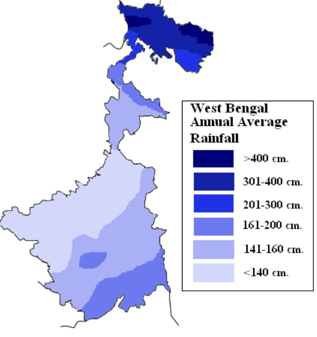

Climate of West Bengal
Rainfall Distribution

Useful Climatic Information
- Lowest rainfall → Mayureshwar in Birbhum (95cm per year)
- Highest rainfall → Buxaduars in Alipurduar (500cm per year)
- Hottest Region → Asansole in West Bardhaman (45 Degee Celcuis)
- Clodest Region → Sandakphu in Darjeeling (8 Degee Celcuis)